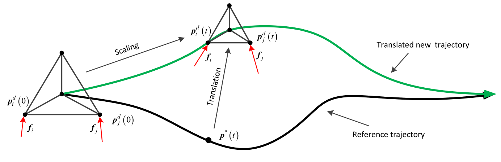
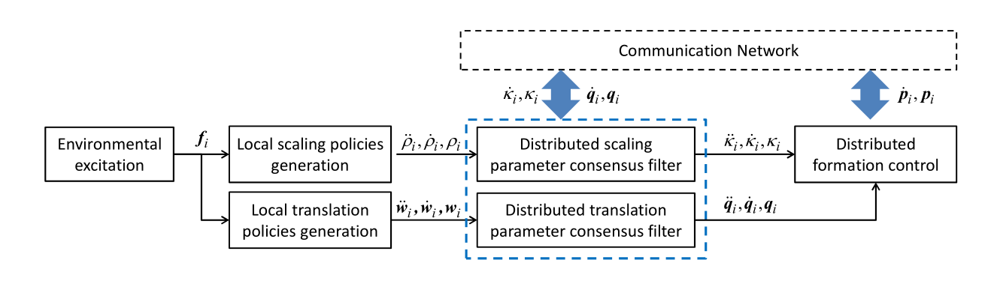

|
Xiaozhen Zhang Xiaozhen Zhang is currently studying for a doctorate at Beijing Institute of Technology(BIT), where I am advised by Qingkai Yang. Before coming to BIT, I obtained my M.S. and B.E. degree at the Northwestern Polytechnical University. His research interests lie in formation control, formation design, distributed parameter estimation, and cooperative aerial transportation. |
 |
Publications
 |
Self-Triggered Based Coordinate
Control With Low Communication for Tethered Multi-UAV
Collaborative Transportation Xiaozhen Zhang, Fan Zhang, Panfeng Huang, Jiale Gao, Hang Yu, Chongxu Pei, Yizhai Zhang IEEE Robotics and Automation Letters, 2021. DOI: 10.1109/LRA.2021.3057294. [Media] [PDF] A cooperative path following control schemes for tethered multi-UAV collaborative transportation, where the self-triggered mechanism is used to reduce communications in the synchronization of local mission times. |
| |
Formation Planning for Tethered
Multirotor UAV Cooperative Transportation With Unknown
Payload and Cable Length Xiaozhen Zhang, Fan Zhang, Panfeng Huang IEEE Transactions on Automation Science and Engineering, 2023. DOI: 10.1109/TASE.2023.3279827. [Media] [PDF] A centralized formation optimization, in which the force distribution on cables is considered. We use the admittance model to transform the optimized position/force hybrid relationship into the unified multirotor UAVs' desired position signal, so that realize the simultaneous optimization of the internal tension and position of the cooperative aerial transportation system. |
|   |
Distributed Variation Parameter
Design for Dynamic Formation Maneuvers With Bearing
Constraints Xiaozhen Zhang, Qingkai Yang, Jingshuo Lyu, Xinyue Zhao, and Hao Fang Transactions on Automation Science and Engineering, 2023, DOI: 10.1109/TASE.2023.3283095. [PDF] A framework to cooperative design the formation scaling and translation parameters according to environmental excitations. Firstly, excitations are input as disturbance to stable third-order integrator systems equipped with high-order shared control barrier functions, and the bounded local formation policies are output. Then, these signal will be input as the local reference to distributed average tracking filters, and finally output global formation policies with consensus. |
| Analysis, planning and control for
cooperative transportation of tethered multi-rotor UAVs
Ya Liu, Fan Zhang, Panfeng Huang, and Xiaozhen Zhang Aerospace Science and Technology, 2021. DOI: 10.1016/j.ast.2021.106673. We evaluate the robustness of the tethered aerial transportation system via analyzing the wrench space and capacity margin. Base on the analysis results, we define a optimization to obtain the the optimal configuration and trajectories. Finally, an extended state observer-based feedback controller is designed for UAVs' trajectory tracking. |
|

|
Distributed Control for Cooperative
Transportation in Presence of Unknown Disturbance
Xiaozhen Zhang, Fan Zhang, Panfeng Huang, Chen Wang, and Ya Liu IEEE International Conference on Real-time Computing and Robotics (RCAR), 2019. DOI: 10.1109/RCAR47638.2019.9044011. We propose a new cooperative aerial transportation system, termed as QNTS, which can be applied to payloads of any shape, size and number with limited total weight. |
| Distributed Decision Making on
Scaling Size for Obstacle Avoidance in Affine Formation
Control Xiaozhen Zhang, Jingshuo Lv, Shaolei Wei, and Qingkai Yan 37th Youth Academic Annual Conference of Chinese Association of Automation (YAC), 2022. DOI: YAC57282.2022.10023557. A simplified version of the paper "Distributed Variation Parameter Design for Dynamic Formation Maneuvers With Bearing Constraints". |
|

|
Design and Analysis of Truss Aerial
Transportation System (TATS): The Lightweight Bar
Spherical Joint Mechanism Xiaozhen Zhang, Qingkai Yang, Rui Yu, Delong Wu, Shaozhun Wei, Jingqiang Cui, and Hao Fang IEEE/RSJ International Conference on Intelligent Robots and Systems (IROS), 2022. DOI: 10.1109/IROS47612.2022.9981191.[Media] [PDF] We propose a new aerial transportation system, termed as TATS, which integrates the structural advantage of truss and rigid framework. |

|
A Distributed Algorithm for Solving A
Time-Varying Linear Equation Xiaozhen Zhang, Qingkai Yang, Haijiao Wei, Wei Chen, Zhihong Peng, and Hao Fang 62nd IEEE Conference on Decision and Control (CDC), 2023. We achieve distributed solving a time-varying linear equation by enforcing local solutions to track the manifolds corresponding to local linear equations and reach the consensus simultaneously. |
Academic ServiceConference Reviewer: IROS2019, IROS2021, IROS2022, ACC2022. Journal Reviewer: IEEE Transactions on Signal and Information Processing over Networks, Journal of Advanced Computational Intelligence and Intelligent Informatics. |
| Last Update 10/20/2023. Thanks to Jon Barron. |